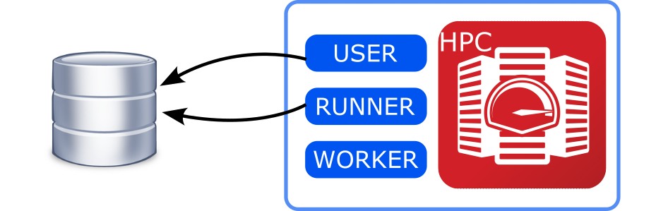
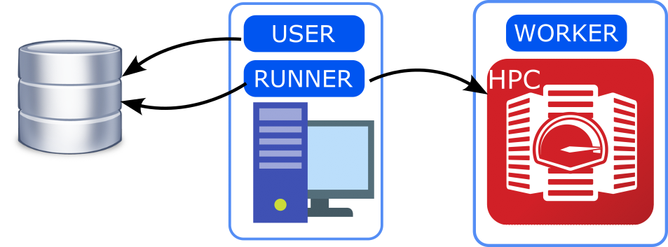
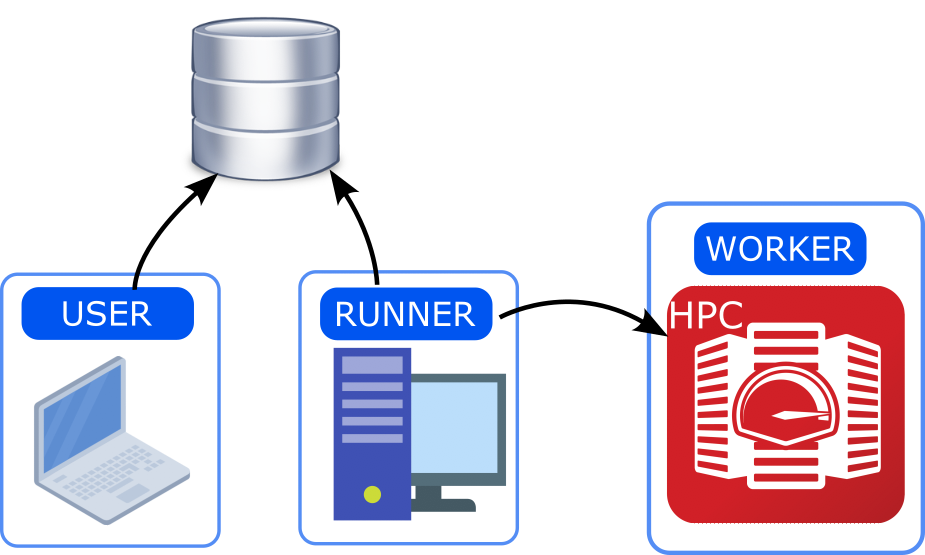

Setup and installation#
Introduction#
In order to properly set up jobflow-remote it is important to understand
the elements composing its structure.
There is a MongoDB database that is used to store the state of the Jobs and their outputs.
We can then consider three environments involved in the Flows execution
USER: The machine where the user creates new Flows and adds them to the DB. Also allows to check the state of the Jobs and analyse/fix failed ones.
RUNNER: The machine where runs the
runnerdaemon, taking care of advancing the state of the Jobs by copying files, submitting Jobs to workers and retrieving outputs.WORKER: The computing center, where the Jobs are actually executed.
All of these should have a python environment with at least jobflow-remote installed.
However, only USER and RUNNER need to have access to the database. If not overlapping
with the other RUNNER only needs jobflow-remote and its dependencies to be installed.
Setup options#
Depending on your resources and limitations imposed by computing centers you can consider choosing among these three configurations:
All-in-one#
USER, RUNNER and WORKER are the same machine.
If your database can be reached from the computing center and the daemon can be executed on one of the front-end nodes, this is the simplest option.
{kind=link}
User-Workstation#
USER and RUNNER are on a workstation external to the computing center with access to the database, WORKER should be reachable with a passwordless connection from the workstation.
This is the most convenient option if the computing center does not have access to the database.
{kind=link}
Full-split#
USER can be the user’s laptop/workstation. The RUNNER runs on a server that can keep running and has access to the computing center (WORKER).
If preferring to work on a local laptop to generate new Flows and analyze outputs, but couldn’t let the daemon running on the same machine this could be a convenient solution.
{kind=link}
Install#
jobflow-remote is a Python 3.9+ library and can be installed using pip:
pip install jobflow-remote
or, for the development version:
pip install git+https://github.com/Matgenix/jobflow-remote.git
Environments#
If the chosen configuration corresponds to All-in-one a single python environment can be created. A common way of doing so it to use an environment manager like conda or miniconda, running:
conda create -n jobflow python=3.10
and installing jobflow-remote and all the other packages containing the Flows to execute
For the User-Workstation and Full-split configurations the environments need to be created on multiple machines. A convenient option consists in creating a conda environment on one of the machines, like above. Then extracting all the installed packages by running:
conda env export > jobflow_env.yaml
And then use this list to generate equivalent environment(s) on the other machine(s):
conda env create -n env_name --file jobflow_env.yaml
Warning
It is important that the packages version match between the different machines, especially for the packages containing the implemented Flows and Makers.
Configuration#
Jobflow-remote offers many configuration options, to customize both the daemon and the Job execution. A full description of all the options can be found in the Projects configuration and Settings section. Here we provide a minimal working example configuration to get started.
Warning
Standard jobflow execution requires to define the out JobStore in the JOBFLOW_CONFIG_FILE.
Here, all the jobflow related configuration are given in the jobflow-remote configuration
file and the content of the JOBFLOW_CONFIG_FILE will be ignored.
By default, jobflow-remote will search the projects configuration files in the ~/.jfremote.
In many cases a single project and thus configuration file would be enough, so
here we will not enter into the details of how to deal with multiple projects
configuration and other advanced settings.
You can get an initial setup configuration by running:
jf project generate YOUR_PROJECT_NAME
For the sake of simplicity in the following the project name will be std,
but there are no limitations on the name. This will create a file std.yaml in
your ~/.jfremote folder with the following content:
name: std
workers:
example_worker:
type: remote
scheduler_type: slurm
work_dir: /path/to/run/folder
pre_run: source /path/to/python/environment/activate
timeout_execute: 60
host: remote.host.net
user: bob
queue:
store:
type: MongoStore
host: localhost
database: db_name
username: bob
password: secret_password
collection_name: jobs
exec_config: {}
jobstore:
docs_store:
type: MongoStore
database: db_name
host: host.mongodb.com
port: 27017
username: bob
password: secret_password
collection_name: outputs
additional_stores:
data:
type: GridFSStore
database: db_name
host: host.mongodb.com
port: 27017
username: bob
password: secret_password
collection_name: outputs_blobs
You can now edit the yaml file to reflect you actual configuration.
Note
Consider that the configuration file should be accessible by the USER and the RUNNER defined above. If these are in two different machines be sure to also share the configuration file on both of them.
Workers#
Workers are the computational units that will actually execute the jobflow Jobs. If you are
in an All-in-one configuration the worker type can be local and you do
not need to provide a host. Otherwise, all the information for an SSH connection should be
provided. In the example it is assumed that a passwordless connection can be established
based on the content of the ~/.ssh/config file. The remote connection is based on
Fabric, so all of its functionalities can be used.
It is also important to specify a work_dir, where all the folders for the Jobs execution
will be created.
Queue#
The connection details for the database that will contain all the information about the
state of Jobs and Flows. It can be defined in a way similar to the one used in jobflow’s
configuration file. Three collections will be used for this purpose.
Jobstore#
The jobstore used for jobflow. Its definition is equivalent to the one used in
jobflow’s configuration file. See Jobflow’s documentation
for more details. It can be the same as in the Queue or a different one.
Check#
After all the configuration have been set, you can verify that all the connections can be established by running:
jf project check --errors
If everything if fine you should see something like:
✓ Worker example_worker
✓ Jobstore
✓ Queue store
Otherwise the python errors should also show up for the connections that failed.
As a last step you should reset the database with the command:
jf admin reset
Warning
This will also delete the content of the database. If are reusing an existing database and do not want to erase your data skip this step.
You are now ready to start running workflows with jobflow-remote!